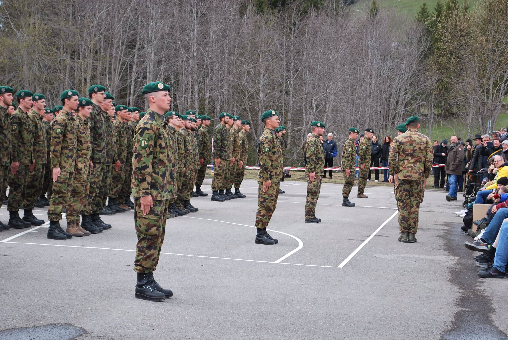

Lieutenant — Armée Suisse
Promu au grade de Lieutenant après l'école d'officiers, j'ai commandé une section d'infanterie de 30 soldats pendant 19 semaines. Une école de leadership intense, où la responsabilité humaine prime sur tout le reste.
Réalisations de cette période

Officier — Armée Suisse
Promu au grade de Lieutenant en décembre 2022, j'ai accompli un service pratique de 19 semaines en tant que chef de section. J'ai dirigé et instruit une section d'infanterie composée de 30 soldats et 4 chefs de groupe, ce qui m'a permis de mettre en pratique et de renforcer des compétences de conduite dans un environnement exigeant.
Diriger des hommes dans des conditions difficiles m'a appris que la technique sans l'humain ne vaut pas grand-chose. La clarté des ordres, la cohésion d'équipe et la gestion du stress sont des compétences que je réinvestis quotidiennement dans mes projets d'ingénierie.
Certificat de Conduite Niveau 1 — ASC
Cette expérience a été validée par le Certificat de Conduite Niveau 1 de l'Association Suisse des Cadres (ASC), reconnaissant les compétences développées dans les 4 domaines suivants :
🎯 Conduite et gestion d'équipe
Diriger en fonction des objectifs, motiver et entretenir une culture du feedback.
📋 Organisation et résolution de problèmes
Planifier de manière structurée et résoudre méthodiquement les problèmes.
💬 Communication et gestion des conflits
Communiquer de manière adaptée et aborder les situations difficiles.
🧠 Gestion de soi
Analyser ses propres expériences et gérer activement les facteurs de stress.
En chiffres
30
soldats commandés
4
chefs de groupe
19
semaines de service